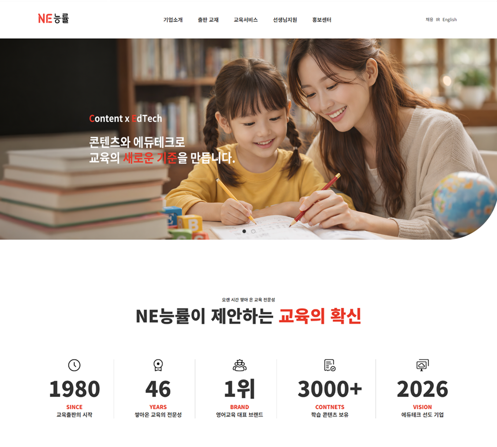
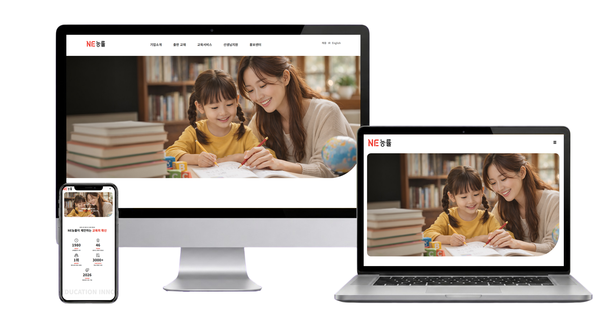
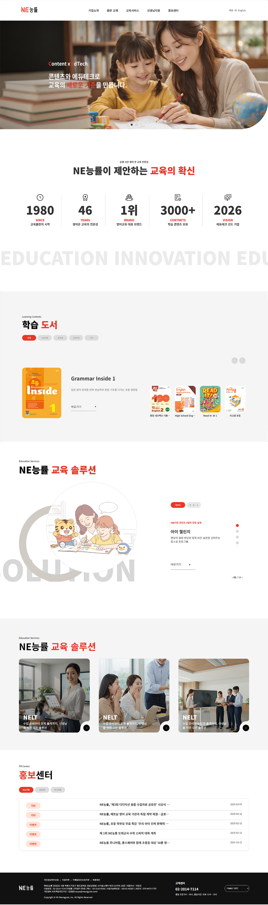

CLEAR
PATH
학습 대상과 서비스별로 정보를 구분해 원하는 콘텐츠를 빠르게 찾도록 구성
PREMIUM DESSERT BRAND REDESIGN
한스케익의 브랜드 감성과 제품 탐색 흐름을 동시에 정돈한 반응형 웹사이트 UX/UI 리디자인 프로젝트입니다.
EXPLORE CASE↘
다양한 교육 콘텐츠를 누구나 쉽게 이해하고 탐색할 수 있도록 밝고 친근한 교육 웹사이트로 새롭게 구성했습니다.
기존 사이트의 출판 교재, 교육서비스, 교사 지원, 기업 정보를 분석하고 이용 목적에 따라 콘텐츠 체계를 다시 나눴습니다. 학생과 학부모, 교사 등 다양한 사용자가 필요한 정보를 빠르게 찾을 수 있도록 메뉴와 주요 콘텐츠의 우선순위를 조정했습니다.
화이트를 기반으로 밝은 포인트 컬러와 교육 현장 이미지를 활용해 활기 있고 신뢰도 높은 인상을 표현했습니다. 교재 슬라이드와 숫자 모션, 카드형 구성을 적용해 풍부한 콘텐츠를 깔끔하게 전달하도록 설계했습니다.
학습 대상과 서비스별로 정보를 구분해 원하는 콘텐츠를 빠르게 찾도록 구성
교재와 교육서비스, 교사 지원 콘텐츠를 연결해 폭넓은 학습 경험을 제공
밝은 컬러와 교육 현장 이미지를 활용해 친근하면서도 신뢰감 있는 인상을 전달
국내 교육기업의 웹사이트를 비교해 교재 분류와 교육서비스 연결 방식을 분석했습니다. 풍부한 콘텐츠를 유지하면서도 사용자가 필요한 정보를 빠르게 찾을 수 있는 방향을 도출했습니다.
학년·과목·브랜드별 분류가 세밀함
교재와 학습 자료를 함께 제공함
교과서와 에듀테크 역량이 잘 드러남
서비스가 여러 사이트로 나뉘어 있음
선택 항목이 많아 탐색 부담이 큼
기업과 브랜드 정보가 분산되어 있음
초·중·고 교재 구성이 폭넓음
과목별 학습 자료가 풍부함
교재 시리즈 구분이 구체적임
교재 종류가 많아 비교가 어려움
메뉴와 목록의 정보량이 많음
기업 메시지가 교재 정보에 묻힘
학년·과목·대상별 기준을 명확히 나눠 교재 선택의 부담을 줄였습니다.
교재·교육서비스·교사 지원 정보를 연결해 분산된 콘텐츠를 한 흐름으로 정리했습니다.
교육 콘텐츠와 기업 철학을 함께 보여주어 NE능률만의 브랜드 가치를 강조했습니다.
교재·교육서비스·교사 지원 정보가 분산되어 탐색이 어려움
대상과 이용 목적에 따라 정보를 구분해 빠른 접근 지원
다양한 교재와 서비스의 특징을 한눈에 비교하기 어려움
탭과 카드, 슬라이드로 주요 특징과 선택 기준을 명확히 제시
기업 정보와 교육 브랜드의 가치가 개별 콘텐츠에 나뉘어 있음
교육 이미지와 주요 성과를 연결해 전문성과 신뢰를 강화
화이트 기반의 깔끔한 화면에 NE능률의 오렌지 레드 컬러를 포인트로 활용해 밝고 신뢰감 있는 교육 브랜드 이미지를 표현했습니다. 교육 현장 이미지와 교재 비주얼을 중심으로 친근한 분위기를 더하고, 카드·슬라이드·스크롤 모션을 적용해 다양한 교육 콘텐츠가 지루하지 않게 이어지도록 구성했습니다. 또한 정보의 중요도에 따라 화면을 정리해 사용자가 필요한 내용을 쉽고 빠르게 파악할 수 있도록 했습니다.
정돈된 그리드로 정보의 우선순위를 명확하게 구성
밝은 이미지와 여백으로 친근하고 편안한 분위기 표현
슬라이드와 모션을 활용해 교육 콘텐츠에 활력을 더함
교재와 교육서비스를 연결해 자연스러운 탐색 흐름을 구성
깔끔한 화이트와 블랙을 기반으로 능률의 활기찬 이미지를 담은 레드를 포인트로 적용했습니다. 밝은 그레이를 보조 컬러로 활용해 콘텐츠가 편안하고 명확하게 전달되도록 구성했습니다.
ABCDEFGHIJKLMNOPQRSTUVWXYZ
0123456789
가나다라마바사아자차카타파하
데스크톱의 비대칭 레이아웃은 태블릿과 모바일에서 콘텐츠 우선순위에 맞춰 단순한 세로 구조로 변환됩니다.

